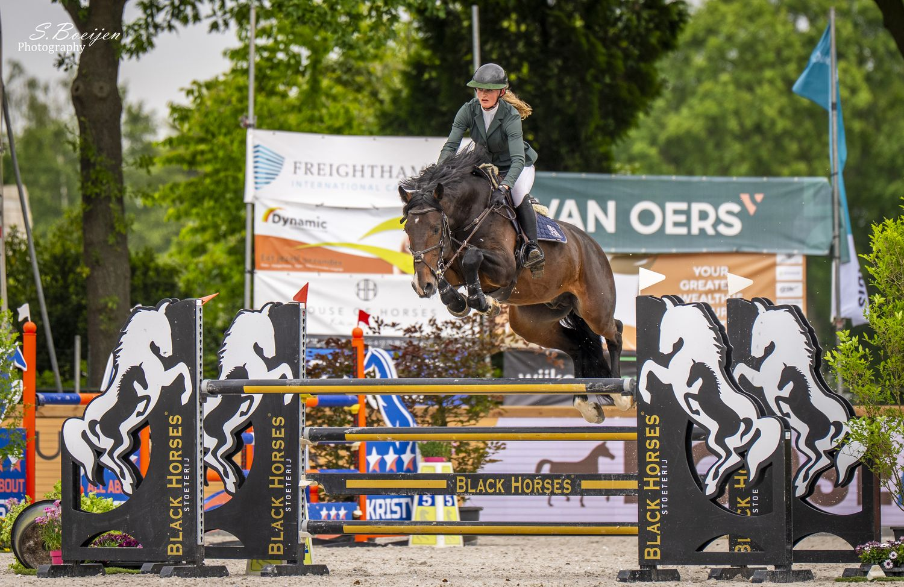

Te koop
Op zoek naar een springpaard? Lucy denkt graag met je mee.
Bel Lucy gerust
Ben je op zoek naar een springpaard? Neem dan gerust telefonisch contact op met Lucy.
We hebben zelf altijd talentvolle springpaarden staan, en daarnaast kent Lucy via haar netwerk veel paarden. Zo kan ze je bij je zoektocht altijd van dienst zijn — van jong talent tot een verder opgeleid paard.

Het juiste paard vinden
Zoeken op maat
We brengen je wensen en niveau in kaart en zoeken gericht naar een passend springpaard.
Eerlijk advies
Transparant over aanleg en opleiding, zodat je weet wat je koopt.
Breed netwerk
Via haar netwerk in de springsport kent Lucy veel paarden, ook buiten de eigen stal.
Op zoek naar een springpaard?
Bel of stuur een bericht — Lucy vertelt je graag meer over de mogelijkheden en het actuele aanbod.